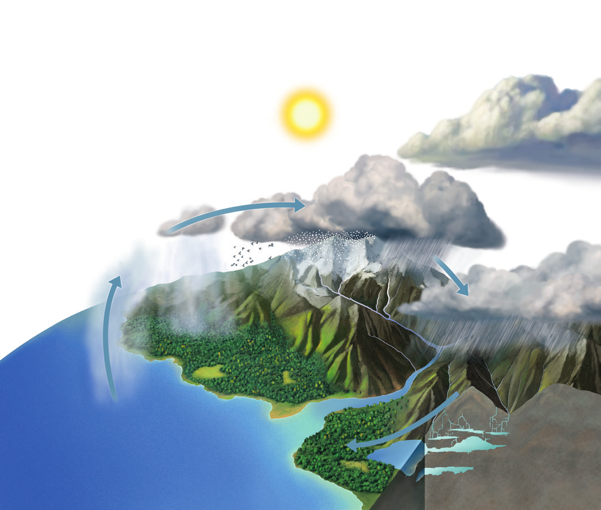
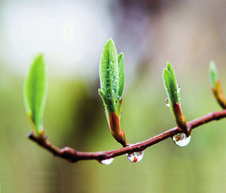
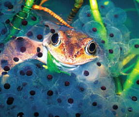
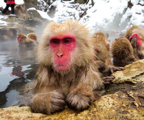

El agua de la hidrosfera se distribuye entre los océanos, los continentes y la atmósfera. Pasa de unos a otros impulsada por la energía solar, que calienta el agua superficial y provoca su evaporación e incorporación a la atmósfera. Desde allí, el agua inicia un recorrido por las capas superficiales de la Tierra que recibe la denominación de ciclo del agua.

Ilustración del ciclo del agua
Fases del ciclo del agua
Condensación: El vapor de agua acumulado en la atmósfera se enfría y se condensa, formando gotas de agua o cristales de hielo que originan las nubes.
Evaporación: El Sol calienta el agua superficial y la evapora. Esta agua evaporada pasa a la atmósfera, donde es transportada a otras regiones del planeta.
Infiltración: Una parte del agua que cae sobre la superficie se infiltra y rellena los poros y las grietas de las rocas; así se forman las aguas subterráneas.
Escorrentía: El agua de las precipitaciones que no se infiltra fluye por la superficie en forma de torrentes y ríos, hasta que se acumula en mares y océanos.
Precipitación: Desde las nubes, el agua cae sobre la superficie del planeta en forma de precipitaciones: lluvia, nieve o granizo.
IMPORTANCIA DE LA HIDROSFERA PARA LOS SERES VIVOS
El agua es imprescindible para los seres vivos porque es el soporte de la vida, interviene en las funciones vitales y regula la temperatura.
Soporte de la vida

Hojas frescas con gotas de lluvia
Los seres vivos surgen en el agua y esta sustancia es su componente mayoritario.
Funciones vitales

Rana entre huevos
Los seres vivos necesitan el agua para desarrollar las funciones vitales.
Regula la temperatura

Monos de nieve en aguas termales
El agua regula la temperatura corporal de los seres vivos y el clima del planeta.